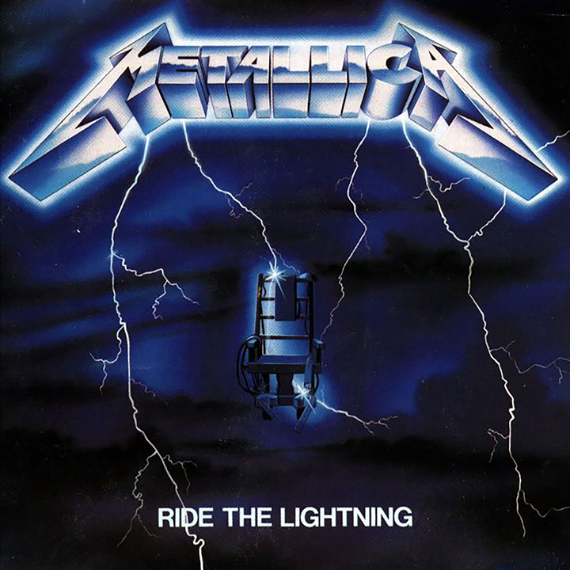

For Whom The Bell Tolls-Live
Ride The Lightening Album
Ride the Lightning is the second studio album by American heavy metal band Metallica, released on July 27, 1984, by the independent record label Megaforce Records. The album was recorded in three weeks with producer Flemming Rasmussen at the Sweet Silence Studios in Copenhagen, Denmark. The artwork, based on a concept by the band, depicts an electric chair being struck by lightning flowing from the band logo. The title was taken from a passage in Stephen King's novel The Stand. Although rooted in the thrash metal genre, the album showcased the band's musical growth and lyrical sophistication. This was partly because bassist Cliff Burton introduced the basics of music theory to the rest of the band and had more input in the songwriting. Instead of relying heavily on fast tempos as on its debut Kill 'Em All, Metallica broadened its approach by employing acoustic guitars, extended instrumentals, and more complex harmonies. The overall recording costs were paid by Metallica's European label Music for Nations because Megaforce was unable to cover it. It was the last album to feature songwriting contributions from former lead guitarist Dave Mustaine, and the first to feature contributions from his replacement, Kirk Hammett.
Ride the Lightning received positive response from music critics, who saw it as a more ambitious effort than its predecessor. Metallica promoted the album on the Bang That Head That Doesn't Bang European tour in late 1984, and on its North American leg in the first half of 1985. The band performed at major music festivals such as Monsters of Rock and Day on the Green later that year. Two months after its release, Elektra Records signed Metallica to a multi-year deal and reissued the album. Ride the Lightning peaked at number 100 on the Billboard 200 with no radio exposure. Although 75,000 copies were initially pressed for the American market, the album sold half a million by November 1987. It was certified 6× platinum by the Recording Industry Association of America (RIAA) in 2012 for shipping six million copies in the United States. Many rock publications have ranked Ride the Lightning on their best album lists, saying it had a lasting impact on the genre.
-See more info at Ride The Lightning Wikipedia site
Album Song Listing
- Fight Fire with Fire
- Ride the Lightning
- For Whom the Bell Tolls
- Fade to Black
- Trapped Under Ice
- Escape
- Creeping Death
- The Call of Ktulu